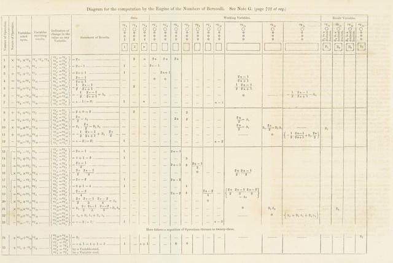
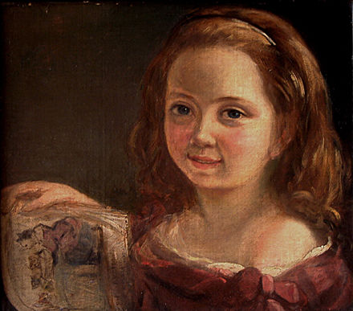

What is Ada Lovelace known for?
Ada Lovelace is partly known for being the world's first computer programmer. She wrote the world's first machine algorithm for an early computing machine that only existed on paper. At this age (1840s), sexism existed and women were looked down on, because of this not a lot of people took her seriously. Eventually, she became more known and the machine algorithm she created, was recognized. In 1843, the transcript was published with the help of Charles Babbage (known as a mathematician, philosopher,inventor and mechanical engineer) and Luigi Menabrea (known as a mathematician and was an Italian prime minister).

Childhood
Ada Lovelace was born 10 December 1815, in London, United Kingdom. Lovelace did not have a close relationship with her mother and her father wasn't fond of Ada because she was a girl and he wanted a "glorious boy". Lovelace, never had good health as a child nad even as an adult it was poor, In June 1829, she was paralyzed after having measles. Lovelace needed bed rest for over a year, this whole time her family thought she was useless but really she she developed her mathematical and technological skills.
Education
At the age of 17, Ada met Charles Babbage, a mathematician and inventor. The pair became friends, Babbage was a mentor figure to Lovelace and helped her throughout the years, and helped her with her ideas. With Babbage's help, Lovelace began studying advanced mathematics with University of London.